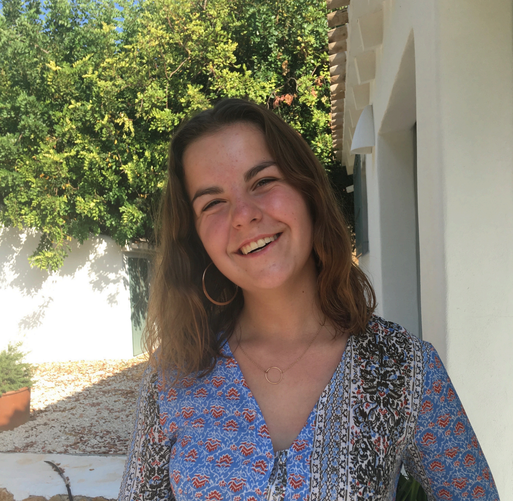
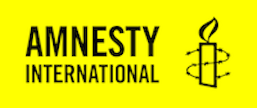

Espérance
Hello, je m'appelle Espérance De Boysson, et pour me présenter il suffit de dire que je suis passionnéepar la musique. C'est ce qui me fait vibrer, je joue du piano de puis 12 ans. Peu importe mon humeur, j'ai toujours la motivation pour apprendre de nouveau morceaux ou perfectionner mon repertoire.
Bénévolat
J'ai fait partie du pôle Amnesty de Fénelon Sainte-Marie, où l'on a pu organiser de nomnreuses conférences et réaliser plusieurs appels aux dons.
Scootisme 🏕️
Cela fait plusieurs années que je pratique le scootisme. Le contact avec la nature et la totale déconnexion faît de cette activité quelque chose d'indispensable dans ma vie.
Mes Réseaux